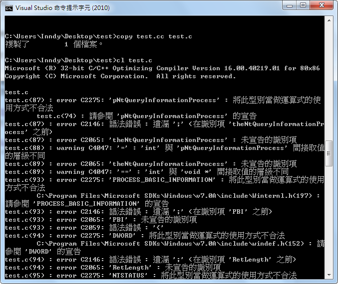

2014/05/19 13:20
我寫了一個script去parse這個東西....
一開始是這麼寫的
# -*- coding: utf-8 -*-
import requests, re
urls = """http://www.shute.kh.edu.tw/~t1248/voc7000-AB.htm
http://www.shute.kh.edu.tw/~t1248/voc 7000 - CD.htm
http://www.shute.kh.edu.tw/~t1248/voc7000- EF.htm
http://www.shute.kh.edu.tw/~t1248/voc 7000 - GHIJ.htm ...
2014/05/15 13:46
Config
Default Editor For sudoedit
sudo update-alternatives --config editor
Static IP
sudoedit /etc/network/interfaces
auto eth0
iface eth0 inet static
address <address>
netmask <mask>
network <network>
broadcast <broadcast>
gateway <gateway>
dns-nameservers 8.8.8.8
Problems
sendmail was slow
edit /etc/hosts
127.0.0.1 localhost localhost.localdomain ...
2014/05/12 05:58


有使用XAMPP的使用者們，快點進行修補囉！
Continue reading »
2014/05/11 09:28
Routing Bug
我從blogger匯入文章，但是custom url內有.的出現，結果就噴Error 404
解決方法
http://logdown.com/account/posts/198288-what-is-reset.css/edit
http://logdown.com/account/posts/198288/edit
進入編輯後，把dot拿掉即可

大量刪除分類
吐嘈：POST轉頁超慢的，我剛剛從亂七八糟的blogger搬家過來，刪categories刪到吐血
// ==UserScript==
// @name ajax-delete-categories
// @namespace logdown.com
// @include http://logdown.com/account/blogs/inndy/categories
// @include https://logdown.com/account ...
2014/02/15 12:20
從PEB結構體裡面找出所有已經載入的DLL，以及隱藏的方法
可以用在什麼地方就不解釋了....XD
參考資料：
http://bbs.pediy.com/showthread.php?t=124325 （看雪學院 ）
http://msdn.moonsols.com/ （裡面有很多 Windows Structures 的資料）
原文是 masm 寫的，我用 C++ 寫了一個

（不知道為什麼副檔名.c餵給cl就編不過了...Q____Q，所以說是C++）
隱藏的部分大概就斷Link、抹除DLL Name和DLL Path、抹掉PE signature
缺點是可能會造成DLL重載、GetModuleHandle抓不到
（反正就說要隱藏了嘛哈哈哈哈）
不過應該還沒有完全隱藏起來，GetModuleHandle還是會掃過...明明Link都斷掉了阿 OTZ
後來發現不能把整個structure給填0，後面如果用到GetModuleHandle會crash
發生的記憶體存取錯誤的地方也附上了，但是有點懶得繼續追
如果有人找到GetModuleHandle用的Link在哪裡的話記得告訴我 ...
Continue reading »
2014/02/03 15:11
在楓之谷外掛圈打混一段時間，已經覺得乏味了
提供一點寫外掛時用的上的Code片段...
我使用的 IDE 是 Borland C++ Builder / Embarcadero C++ Builder
在Visual Studio下應該也能正常運作
這裡面採用的都是 Intel ASM Style
https://gist.github.com/Inndy/e82499caba9b0649a963
Continue reading »
2014/02/02 07:12
過程中使用到的工具：
- Python
- ~~這樣真的很蠢，請愛用
find grep~~ (thanks to Orange)
- onekey-decompile-apk
- APK multi-tool
- Notepad++
Continue reading »
2014/02/01 12:23
- .NET Framework
- ILSpy
- de4dot
- .NET Reflector
- monodis / ildasm are your good friends
Continue reading »
2014/02/01 12:10
工科技藝競賽的時候入手了一台很難用的HTC Flyer P512
天啊...Android 3.X是要給鬼用喔
於是Google了很久終於找到了可以用的ROM，而且是CM10唷！
雖然還不夠完美，但總比繼續用3.X的Android好 T^T
關於Locked, Unlock, Relock保固差異的說明請見這篇：http://www.mobile01.com/topicdetail.php?f=566&t=3324387
簡單來說：Locked有完整保固，Unlocked無保固，Relocked部份保固
自行斟酌再行刷機
1. HTC Official Unlock：http://www.htcdev.com/bootloader
2. 刷CWM：http://forum.xda-developers.com/showthread.php?t ...
Continue reading »
2013/12/31 17:32
前天在TDoH聚會前自幹的簡報控制器...
因為找不到適合的免費App，所以只好自幹了 Q____Q
https://github.com/Inndy/SlideController
基本上只要有Browser就能夠當作控制器
Continue reading »
2013/12/21 06:28
一開始是受到了這篇文章 （http://tech.shaolin.tw/posts/2013/11/05/towerofsaviors-automatically-battle-without-phone）的啟發
兩個網友（估且稱之A、B）同時都成功的弄出了脫機
後來意外發現了更多帳號的秘密
開新帳號的限制、脫機洗首抽...兩個人洗了6千多個帳號
後來A的帳號被賣卡，B對神魔本身好像也不是很有興趣 XD
有鑑於官方團隊處理外掛的態度真的太消極
還有A被賣卡
所以出來爆料一下
前幾天再apk.tw貼的文（http://apk.tw/thread-448810-1-1.html）
但是好像沒有人裡我 TAT
所以在Blog再發一次
ToS是用C#配Unity Engine寫的，代表你可以輕易的看到她的Source和任意修改
隨機數有兩個，一個是整數，一個是float
隨機數的範圍是9~500
只要知道你綁定的Facebook帳號，我可以幫你抽卡、打關卡，或者把六星卡餵給史萊姆，或者鎖你一輩子 ...
Continue reading »
2013/12/01 14:19
網站安全那些大小事
如果你正在學習使用PHP（其實任何語言都通用）開發網站...
請務必要注意到安全性的問題
特別是有開放留言、註冊功能之類的網站！
有留言板，就有人想 <script> ...
有登入系統，就有人想 'or''=' ...
可以寫<script>的留言板，黑客就可以偷走你的cookie
甚至偷走你的密碼，進入後台搞破壞
萬一你的密碼是萬用密碼，拿到之後每個網站都可以登入
那你就損失慘重了！
至於可以寫單引號的系統呢？
如果你寫了...
$query = mysql_query("DELETE FROM `messages` WHERE " .
"`mid` = '{$_POST['id']}' AND " .
"`del_code` = '{$_POST['code']}'");
像這樣具有刪除留言功能的留言板
那麼我只要搞破壞，在code欄位輸入了 ' or '' = ' ...
整個 SQL 命令就會變成
DELETE FROM `messages` WHERE `mid` = '' AND ...
Continue reading »
2013/11/17 08:43
我的筆電有裝雙系統，Windows 7和Linux Mint
（當然，Ubuntu也適用同樣的方法）
昨天我重灌了Windows 7，所以需要重建grub2
上網找了很多東西之後，分享一下我成功的方法
先用 Live CD 或是 Live USB 開機，然後打開terminal
# 我的mint在sda3，/boot沒有另外mount
mount /dev/sda3 mnt
sudo mount --bind /dev /mnt/dev
# 如果你的/boot有另外mount
#sudo mount --bind /boot /mnt/boot
sudo mount --bind /dev/pts /mnt/dev/pts
sudo mount --bind ...
2013/09/28 14:04
九九乘法表是很常見的作業，常常出現在剛講完迴圈的時候讓大家練習一下
我們先來看看這個最基本的C語言版本：
#include <stdio.h>
int main () {
int i, j;
for (i = 1; i <= 9; i++)
for (j = 1; j <= 9; j++)
printf("%d x %d = %2d%s", i, j, i * j, j == 9 ? "\n" : ", ");
return 0;
}
這是VB
Dim i As Integer, j As Integer
Dim output As String ...
 Tech Rain
Tech Rain

 下載：
下載：